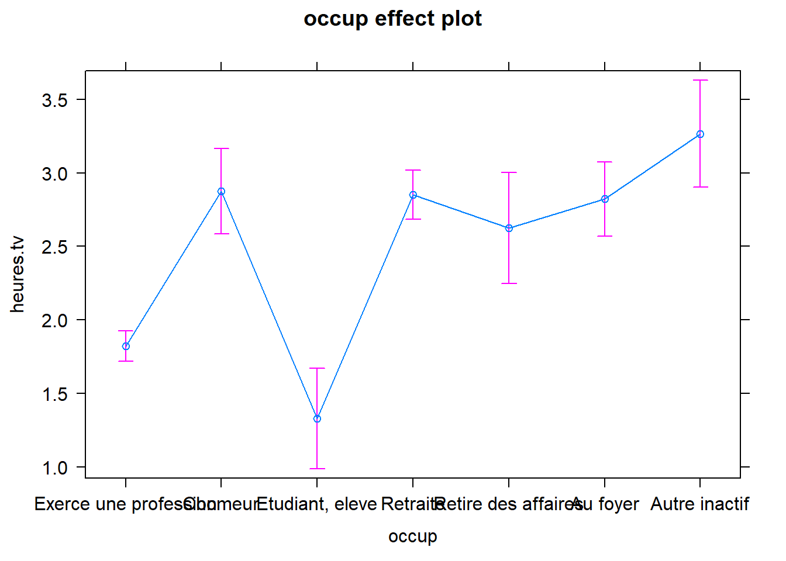
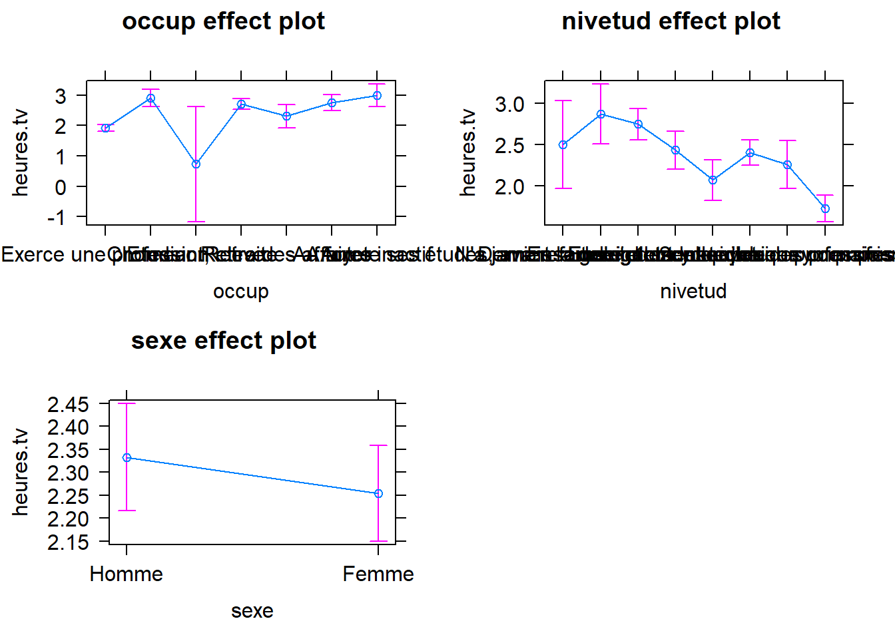

Atelier Premiers pas avec R
Capsule 6: Tests statistiques
Caroline Patenaude
Bibliothécaire, BLSH
2020-10-15
# Chargement des modules nécessaires
library(car)
library(questionr)
library(effects)
# Ajouter la fonction de téléchargement si nécessaire:
# install.packages("car", dependencies=TRUE)
# install.packages("questionr", dependencies=TRUE)
# install.packages("effects", dependencies=TRUE)
# Téléchargement de la base de données hdv2003 du module questionr
# (Extrait de l'enquête "Histoire de vie" de l'Insee - https://www.insee.fr/fr/statistiques/2532244)
data(hdv2003)
# Copie de la base de données dans un objet (datatable) nommé bd
bd <- hdv2003Analyses statistiques
- On retrouve une multitude de modules dédiés aux méthodes statistiques (comme stats, MASS, FactoMineR, plm, glm).
- La même méthode peut se trouver avec variantes dans plusieurs modules.
- Les exemples ci-dessous proviennent principalement du module stats (module par défaut) où l’on retrouve de nombreuses fonctions pour différents types d’analyse
1.1. Notation formule et objet modèle
- Souvent utilisé dans les modèles d’analyse (régressions…) et les graphiques.
- Peut s’interpréter comme en “fonction de…”: variable dépendante (effet) en fonction (~) de la var indépendante (cause)
- Toutes les fonctions n’acceptent pas la notation formule, mais est utilisé pour la plupart des modèles d’analyse
- On stocke l’analyse dans un objet qui contiendra les résultats qui, selon l’analyse, inclueront un ensemble d’éléments d’information auxquels on pourra accéder de deux façons:
En passant notre objet-modèle à différentes fonctions génériques (selon le type de test):
mod <- lm(y ~ x, data=NomObjet) # Créer son objet modèle
mod # résumé des résultats
summary(mod) # ensemble des résultats détaillés
coef(mod) # coefficients et erreurs standards
residuals(mod) # résidus
confint(mod) # intervalles de confiance
fitted(mod) # valeurs ajustées
anova(mod) # appliquer analyse de variance sur modèle
predict(mod) # calculer des valeurs prédites à partir d'un modèle
plot(mod) # et nombreuses autres fonctions graphiques En utilisant la fonction names(mod) et en sélectionnant individuellement le nom de l’élément avec l’opérateur $:
mod <- lm(y ~ x) # Créer son objet modèle
names(mod) # Voir les éléments du résultat
mod$coefficients # Sélectionner l'élément individuelÀ noter: par défaut les résultats sont présentés selon la notation scientifique. Pour la désactiver utiliser l’instruction: options(scipen = 999)
1.2. Les modalités de référence:
- Dans R, il n’est pas nécessaire de recoder ses variables en “dummy”, les analyses s’en chargent par défaut lorsqu’on utilise des variables qualitatives.
- Mais attention à la modalité de référence des facteurs définie par défaut: la première dans la liste des niveaux.
## [1] "Non" "Oui"2. Intervalle de confiance
##
## 1-sample proportions test with continuity correction
##
## data: table(bd$sport), null probability 0.5
## X-squared = 152.9, df = 1, p-value < 0.00000000000000022
## alternative hypothesis: true p is not equal to 0.5
## 95 percent confidence interval:
## 0.3404821 0.3830553
## sample estimates:
## p
## 0.3615##
## 1-sample proportions test with continuity correction
##
## data: table(relevel(bd$sport, "Oui")), null probability 0.5
## X-squared = 152.9, df = 1, p-value < 0.00000000000000022
## alternative hypothesis: true p is not equal to 0.5
## 95 percent confidence interval:
## 0.3404821 0.3830553
## sample estimates:
## p
## 0.3615# Intervalle de confiance d'une moyenne
# Fonction t.test
# Changer le niveau de confiance avec l'argument (bd$age, conf.level=.x)
t.test(bd$age, conf.level=.99)##
## One Sample t-test
##
## data: bd$age
## t = 127.12, df = 1999, p-value < 0.00000000000000022
## alternative hypothesis: true mean is not equal to 0
## 99 percent confidence interval:
## 47.18027 49.13373
## sample estimates:
## mean of x
## 48.1573. Test du Khi-carré
# Passe la table comme argument à la fonction chisq.test() (Module questionr)
mod.chi <- chisq.test(bd$sport, bd$sexe)
# Applique correction par défaut, sinon ajouter argument: ,correct=FALSE##
## Pearson's Chi-squared test with Yates' continuity correction
##
## data: bd$sport and bd$sexe
## X-squared = 16.574, df = 1, p-value = 0.00004679## [1] "statistic" "parameter" "p.value" "method" "data.name" "observed"
## [7] "expected" "residuals" "stdres"## bd$sexe
## bd$sport Homme Femme
## Oui 324.9885 398.0115
## Non 574.0115 702.9885# Fonction chisq.residuals() du module questionr pour les résidus
tab <- table(bd$sport, bd$sexe)
chisq.residuals(tab) ##
## Homme Femme
## Oui 2.44 -2.21
## Non -1.84 1.664. Test de fisher
##
## Fisher's Exact Test for Count Data
##
## data: bd$sport and bd$sexe
## p-value = 0.00004629
## alternative hypothesis: true odds ratio is not equal to 1
## 95 percent confidence interval:
## 1.217630 1.772444
## sample estimates:
## odds ratio
## 1.4688335. Différence de moyennes entre deux groupes (Test T)
Vérifier si les moyennes d’une variable quantitative de deux groupes sont statistiquement différentes
# Explorer les statistiques descriptives selon les groupes avec la fonction by()
by(bd$age, bd$sport, FUN=summary)## bd$sport: Oui
## Min. 1st Qu. Median Mean 3rd Qu. Max.
## 18.00 29.00 39.00 40.93 51.50 89.00
## ------------------------------------------------------------
## bd$sport: Non
## Min. 1st Qu. Median Mean 3rd Qu. Max.
## 18.00 40.00 52.00 52.25 64.00 97.00## bd$sport: Oui
## [1] 231.8337
## ------------------------------------------------------------
## bd$sport: Non
## [1] 272.0692# Normalité des distributions - Test de Shapiro-Wilk
## Avec la fonction by
by(bd$age, bd$sport, FUN=shapiro.test)## bd$sport: Oui
##
## Shapiro-Wilk normality test
##
## data: dd[x, ]
## W = 0.96203, p-value = 0.0000000000009734
##
## ------------------------------------------------------------
## bd$sport: Non
##
## Shapiro-Wilk normality test
##
## data: dd[x, ]
## W = 0.98844, p-value = 0.00000001654##
## F test to compare two variances
##
## data: age by sport
## F = 0.85211, num df = 722, denom df = 1276, p-value = 0.01621
## alternative hypothesis: true ratio of variances is not equal to 1
## 95 percent confidence interval:
## 0.7497388 0.9707395
## sample estimates:
## ratio of variances
## 0.8521131## Levene's Test for Homogeneity of Variance (center = median)
## Df F value Pr(>F)
## group 1 7.5237 0.006144 **
## 1998
## ---
## Signif. codes: 0 '***' 0.001 '**' 0.01 '*' 0.05 '.' 0.1 ' ' 1##
## Welch Two Sample t-test
##
## data: age by sport
## t = -15.503, df = 1600.4, p-value < 0.00000000000000022
## alternative hypothesis: true difference in means is not equal to 0
## 95 percent confidence interval:
## -12.759002 -9.893117
## sample estimates:
## mean in group Oui mean in group Non
## 40.92531 52.25137# Pour un test t classique, ajouter l'argument var.equal = TRUE
t.test(age ~ sport, data=bd, var.equal= TRUE)##
## Two Sample t-test
##
## data: age by sport
## t = -15.164, df = 1998, p-value < 0.00000000000000022
## alternative hypothesis: true difference in means is not equal to 0
## 95 percent confidence interval:
## -12.790849 -9.861269
## sample estimates:
## mean in group Oui mean in group Non
## 40.92531 52.251376. Test Wilcoxon/Mann-Whitney (test non-paramétrique parmi d’autres)
##
## Wilcoxon rank sum test with continuity correction
##
## data: age by sport
## W = 282694, p-value < 0.00000000000000022
## alternative hypothesis: true location shift is not equal to 07. Différence de moyenne pour plus de deux groupes (ANOVA)
Évaluer la relation entre une variable quantitative et une variable qualitative avec plus de deux modalités
# Explorer les statistiques descriptives avec la fonction tapply()
tapply(bd$heures.tv, bd$occup, mean, na.rm=T)## Exerce une profession Chomeur Etudiant, eleve
## 1.821681 2.874809 1.329787
## Retraite Retire des affaires Au foyer
## 2.850255 2.624675 2.822222
## Autre inactif
## 3.265060# Fonction aov
mod.aov <- aov(heures.tv ~ occup, data=bd)
# Créé un objet contenant le modèle
# Pour voir effet combiné entre facteurs mod.aov <- aov(heures.tv ~ occup*sexe, bd)## Call:
## aov(formula = heures.tv ~ occup, data = bd)
##
## Terms:
## occup Residuals
## Sum of Squares 616.355 5672.029
## Deg. of Freedom 6 1988
##
## Residual standard error: 1.689122
## Estimated effects may be unbalanced
## 5 observations deleted due to missingness## Df Sum Sq Mean Sq F value Pr(>F)
## occup 6 616 102.73 36.01 <0.0000000000000002 ***
## Residuals 1988 5672 2.85
## ---
## Signif. codes: 0 '***' 0.001 '**' 0.01 '*' 0.05 '.' 0.1 ' ' 1
## 5 observations deleted due to missingness# Fonction lm
mod.lm <- lm(heures.tv ~ occup, bd)
# Peut également utiliser fonction de régression linéaire pour analyse de variance
# Permet de voir les contrastes entre les différents groupes
# La modalité de référence est "Exerce une profession" (levels(bd$occup))
# Pour changer modalité de référence, utiliser la commande relevel: mod.lm <- lm(diff ~ relevel(occup, ref="Etudiant, eleve"), data=bd)
# Possède aussi un argument subset= permettant de sélectionner des modalités. Par exemple:
# mod2.lm <- lm(heures.tv ~ occup, bd, subset = occup %in% c("Exerce une profession", "Chomeur", "Etudiant, eleve"))##
## Call:
## lm(formula = heures.tv ~ occup, data = bd)
##
## Coefficients:
## (Intercept) occupChomeur occupEtudiant, eleve
## 1.8217 1.0531 -0.4919
## occupRetraite occupRetire des affaires occupAu foyer
## 1.0286 0.8030 1.0005
## occupAutre inactif
## 1.4434# Applique la fonction summary à l'objet modèle:
# Coefficients + Tests associés (Test t, degré de significativité)
summary(mod.lm)##
## Call:
## lm(formula = heures.tv ~ occup, data = bd)
##
## Residuals:
## Min 1Q Median 3Q Max
## -3.2651 -0.8748 0.1497 1.1497 8.7349
##
## Coefficients:
## Estimate Std. Error t value Pr(>|t|)
## (Intercept) 1.8217 0.0522 34.897 < 0.0000000000000002 ***
## occupChomeur 1.0531 0.1565 6.728 0.000000000022489 ***
## occupEtudiant, eleve -0.4919 0.1819 -2.705 0.0069 **
## occupRetraite 1.0286 0.1000 10.284 < 0.0000000000000002 ***
## occupRetire des affaires 0.8030 0.1994 4.026 0.000058832091852 ***
## occupAu foyer 1.0005 0.1393 7.182 0.000000000000969 ***
## occupAutre inactif 1.4434 0.1926 7.494 0.000000000000100 ***
## ---
## Signif. codes: 0 '***' 0.001 '**' 0.01 '*' 0.05 '.' 0.1 ' ' 1
##
## Residual standard error: 1.689 on 1988 degrees of freedom
## (5 observations deleted due to missingness)
## Multiple R-squared: 0.09801, Adjusted R-squared: 0.09529
## F-statistic: 36 on 6 and 1988 DF, p-value: < 0.00000000000000022## Analysis of Variance Table
##
## Response: heures.tv
## Df Sum Sq Mean Sq F value Pr(>F)
## occup 6 616.4 102.726 36.005 < 0.00000000000000022 ***
## Residuals 1988 5672.0 2.853
## ---
## Signif. codes: 0 '***' 0.001 '**' 0.01 '*' 0.05 '.' 0.1 ' ' 1# Peut aussi obtenir des résultats d'analyse de variance (somme des carrés, degré de liberté, valeur de F...) en appliquant anova à l'objet modèle
# À noter: Les fonctions aov() et anova() retourne la somme des carrés de type I7. Corrélations
## [1] 0.1776249# Matrice de corrélations pour deux variables quanti ou plus
# pairwise: n'utiliser que les paires d'observations complètes
# pour Spearman, rajouter argument method = "spearman"
# instruction suivante si plus de deux variables: cor(bd[,c("age", "heures.tv", "freres.soeurs")], use='pairwise')##
## Pearson's product-moment correlation
##
## data: bd$age and bd$heures.tv
## t = 8.0578, df = 1993, p-value = 0.000000000000001324
## alternative hypothesis: true correlation is not equal to 0
## 95 percent confidence interval:
## 0.1347898 0.2197974
## sample estimates:
## cor
## 0.17762498. Régression linéaire
Prédire la valeur d’une variable dépendante continue sur la base des valeurs de variables indépendantes
Fonction lm()
# Quelles variables prédisent les heures de télé écoutées
mod1.lm <- lm(heures.tv ~ occup + nivetud + sexe, data=bd)
# On stocke le résultat dans un objet modèle pour pouvoir le manipuler avec d'autres fonctions
# Pour limiter à un sous-groupe: argument ", subset=age>50"# Passe notre objet modèle à la fonction summary pour voir
# le tableau des coefficients et leur test de significativité
summary(mod1.lm)##
## Call:
## lm(formula = heures.tv ~ occup + nivetud + sexe, data = bd)
##
## Residuals:
## Min 1Q Median 3Q Max
## -3.5428 -1.0945 -0.0752 0.8701 8.5809
##
## Coefficients:
## Estimate
## (Intercept) 2.17632
## occupChomeur 0.98936
## occupEtudiant, eleve -1.19169
## occupRetraite 0.78918
## occupRetire des affaires 0.38809
## occupAu foyer 0.83212
## occupAutre inactif 1.07830
## nivetudA arrete ses etudes, avant la derniere annee d'etudes primaires 0.36670
## nivetudDerniere annee d'etudes primaires 0.24299
## nivetud1er cycle -0.07118
## nivetud2eme cycle -0.43234
## nivetudEnseignement technique ou professionnel court -0.10108
## nivetudEnseignement technique ou professionnel long -0.24726
## nivetudEnseignement superieur y compris technique superieur -0.77476
## sexeFemme -0.07855
## Std. Error
## (Intercept) 0.28078
## occupChomeur 0.15680
## occupEtudiant, eleve 0.96901
## occupRetraite 0.10724
## occupRetire des affaires 0.20703
## occupAu foyer 0.14750
## occupAutre inactif 0.19833
## nivetudA arrete ses etudes, avant la derniere annee d'etudes primaires 0.32344
## nivetudDerniere annee d'etudes primaires 0.28367
## nivetud1er cycle 0.29391
## nivetud2eme cycle 0.29839
## nivetudEnseignement technique ou professionnel court 0.28322
## nivetudEnseignement technique ou professionnel long 0.31042
## nivetudEnseignement superieur y compris technique superieur 0.28492
## sexeFemme 0.08173
## t value
## (Intercept) 7.751
## occupChomeur 6.310
## occupEtudiant, eleve -1.230
## occupRetraite 7.359
## occupRetire des affaires 1.875
## occupAu foyer 5.642
## occupAutre inactif 5.437
## nivetudA arrete ses etudes, avant la derniere annee d'etudes primaires 1.134
## nivetudDerniere annee d'etudes primaires 0.857
## nivetud1er cycle -0.242
## nivetud2eme cycle -1.449
## nivetudEnseignement technique ou professionnel court -0.357
## nivetudEnseignement technique ou professionnel long -0.797
## nivetudEnseignement superieur y compris technique superieur -2.719
## sexeFemme -0.961
## Pr(>|t|)
## (Intercept) 0.0000000000000149
## occupChomeur 0.0000000003479586
## occupEtudiant, eleve 0.2189
## occupRetraite 0.0000000000002755
## occupRetire des affaires 0.0610
## occupAu foyer 0.0000000194364641
## occupAutre inactif 0.0000000613298073
## nivetudA arrete ses etudes, avant la derniere annee d'etudes primaires 0.2571
## nivetudDerniere annee d'etudes primaires 0.3918
## nivetud1er cycle 0.8087
## nivetud2eme cycle 0.1475
## nivetudEnseignement technique ou professionnel court 0.7212
## nivetudEnseignement technique ou professionnel long 0.4258
## nivetudEnseignement superieur y compris technique superieur 0.0066
## sexeFemme 0.3367
##
## (Intercept) ***
## occupChomeur ***
## occupEtudiant, eleve
## occupRetraite ***
## occupRetire des affaires .
## occupAu foyer ***
## occupAutre inactif ***
## nivetudA arrete ses etudes, avant la derniere annee d'etudes primaires
## nivetudDerniere annee d'etudes primaires
## nivetud1er cycle
## nivetud2eme cycle
## nivetudEnseignement technique ou professionnel court
## nivetudEnseignement technique ou professionnel long
## nivetudEnseignement superieur y compris technique superieur **
## sexeFemme
## ---
## Signif. codes: 0 '***' 0.001 '**' 0.01 '*' 0.05 '.' 0.1 ' ' 1
##
## Residual standard error: 1.673 on 1868 degrees of freedom
## (117 observations deleted due to missingness)
## Multiple R-squared: 0.1303, Adjusted R-squared: 0.1237
## F-statistic: 19.98 on 14 and 1868 DF, p-value: < 0.00000000000000022# La fonction coef présente les coefficients du modèle de régression et peut s'appliquer individuellement
coef(mod1.lm)## (Intercept)
## 2.17631672
## occupChomeur
## 0.98936350
## occupEtudiant, eleve
## -1.19169450
## occupRetraite
## 0.78918380
## occupRetire des affaires
## 0.38809384
## occupAu foyer
## 0.83212236
## occupAutre inactif
## 1.07829812
## nivetudA arrete ses etudes, avant la derniere annee d'etudes primaires
## 0.36669644
## nivetudDerniere annee d'etudes primaires
## 0.24298900
## nivetud1er cycle
## -0.07118351
## nivetud2eme cycle
## -0.43234458
## nivetudEnseignement technique ou professionnel court
## -0.10107621
## nivetudEnseignement technique ou professionnel long
## -0.24725960
## nivetudEnseignement superieur y compris technique superieur
## -0.77475537
## sexeFemme
## -0.07854815## 2.5 %
## (Intercept) 1.6256451
## occupChomeur 0.6818472
## occupEtudiant, eleve -3.0921436
## occupRetraite 0.5788704
## occupRetire des affaires -0.0179321
## occupAu foyer 0.5428401
## occupAutre inactif 0.6893294
## nivetudA arrete ses etudes, avant la derniere annee d'etudes primaires -0.2676530
## nivetudDerniere annee d'etudes primaires -0.3133502
## nivetud1er cycle -0.6476130
## nivetud2eme cycle -1.0175659
## nivetudEnseignement technique ou professionnel court -0.6565276
## nivetudEnseignement technique ou professionnel long -0.8560686
## nivetudEnseignement superieur y compris technique superieur -1.3335554
## sexeFemme -0.2388450
## 97.5 %
## (Intercept) 2.72698833
## occupChomeur 1.29687983
## occupEtudiant, eleve 0.70875456
## occupRetraite 0.99949726
## occupRetire des affaires 0.79411978
## occupAu foyer 1.12140462
## occupAutre inactif 1.46726680
## nivetudA arrete ses etudes, avant la derniere annee d'etudes primaires 1.00104588
## nivetudDerniere annee d'etudes primaires 0.79932817
## nivetud1er cycle 0.50524595
## nivetud2eme cycle 0.15287678
## nivetudEnseignement technique ou professionnel court 0.45437523
## nivetudEnseignement technique ou professionnel long 0.36154943
## nivetudEnseignement superieur y compris technique superieur -0.21595530
## sexeFemme 0.08174873## Analysis of Variance Table
##
## Response: heures.tv
## Df Sum Sq Mean Sq F value Pr(>F)
## occup 6 558.1 93.016 33.2303 < 0.00000000000000022 ***
## nivetud 7 222.5 31.780 11.3533 0.00000000000003633 ***
## sexe 1 2.6 2.585 0.9236 0.3367
## Residuals 1868 5228.8 2.799
## ---
## Signif. codes: 0 '***' 0.001 '**' 0.01 '*' 0.05 '.' 0.1 ' ' 1## 1 3 4 5 6 7
## 1.323013 2.419306 1.401561 3.129941 1.996692 3.172880## 1 3 4 5 6 7
## -1.323013191 -2.419305719 0.598438657 -0.129941371 0.003307646 -0.2728799329. Régression logistique binaire
Prédire une variable dépendante dichotomique sur la base des valeurs de variables indépendantes
# Fonction glm
mod.reg <- glm(sport ~ sexe + nivetud + qualif, bd, family = binomial(logit))
# La fonction glm permet de calculer plusieurs modèles statistiques donc il faut indiquer à glm avec l’argument family=binomial(logit) # Applique fonction summary au modèle pour voir résultatsles valeurs des coefficients
summary(mod.reg)##
## Call:
## glm(formula = sport ~ sexe + nivetud + qualif, family = binomial(logit),
## data = bd)
##
## Deviance Residuals:
## Min 1Q Median 3Q Max
## -2.2994 -1.0993 0.5248 0.9188 1.4948
##
## Coefficients:
## Estimate
## (Intercept) 15.5105
## sexeFemme 0.3809
## nivetudA arrete ses etudes, avant la derniere annee d'etudes primaires -13.4420
## nivetudDerniere annee d'etudes primaires -13.4444
## nivetud1er cycle -14.1625
## nivetud2eme cycle -14.9886
## nivetudEnseignement technique ou professionnel court -14.7132
## nivetudEnseignement technique ou professionnel long -15.1152
## nivetudEnseignement superieur y compris technique superieur -15.6145
## qualifOuvrier qualifie -0.1532
## qualifTechnicien -0.6169
## qualifProfession intermediaire -0.5741
## qualifCadre -0.4636
## qualifEmploye -0.4086
## qualifAutre 0.1229
## Std. Error
## (Intercept) 277.2085
## sexeFemme 0.1298
## nivetudA arrete ses etudes, avant la derniere annee d'etudes primaires 277.2088
## nivetudDerniere annee d'etudes primaires 277.2085
## nivetud1er cycle 277.2085
## nivetud2eme cycle 277.2085
## nivetudEnseignement technique ou professionnel court 277.2085
## nivetudEnseignement technique ou professionnel long 277.2085
## nivetudEnseignement superieur y compris technique superieur 277.2085
## qualifOuvrier qualifie 0.2463
## qualifTechnicien 0.3101
## qualifProfession intermediaire 0.2697
## qualifCadre 0.2651
## qualifEmploye 0.2286
## qualifAutre 0.3916
## z value
## (Intercept) 0.056
## sexeFemme 2.935
## nivetudA arrete ses etudes, avant la derniere annee d'etudes primaires -0.048
## nivetudDerniere annee d'etudes primaires -0.048
## nivetud1er cycle -0.051
## nivetud2eme cycle -0.054
## nivetudEnseignement technique ou professionnel court -0.053
## nivetudEnseignement technique ou professionnel long -0.055
## nivetudEnseignement superieur y compris technique superieur -0.056
## qualifOuvrier qualifie -0.622
## qualifTechnicien -1.990
## qualifProfession intermediaire -2.128
## qualifCadre -1.749
## qualifEmploye -1.787
## qualifAutre 0.314
## Pr(>|z|)
## (Intercept) 0.95538
## sexeFemme 0.00334
## nivetudA arrete ses etudes, avant la derniere annee d'etudes primaires 0.96133
## nivetudDerniere annee d'etudes primaires 0.96132
## nivetud1er cycle 0.95925
## nivetud2eme cycle 0.95688
## nivetudEnseignement technique ou professionnel court 0.95767
## nivetudEnseignement technique ou professionnel long 0.95652
## nivetudEnseignement superieur y compris technique superieur 0.95508
## qualifOuvrier qualifie 0.53390
## qualifTechnicien 0.04663
## qualifProfession intermediaire 0.03331
## qualifCadre 0.08030
## qualifEmploye 0.07393
## qualifAutre 0.75369
##
## (Intercept)
## sexeFemme **
## nivetudA arrete ses etudes, avant la derniere annee d'etudes primaires
## nivetudDerniere annee d'etudes primaires
## nivetud1er cycle
## nivetud2eme cycle
## nivetudEnseignement technique ou professionnel court
## nivetudEnseignement technique ou professionnel long
## nivetudEnseignement superieur y compris technique superieur
## qualifOuvrier qualifie
## qualifTechnicien *
## qualifProfession intermediaire *
## qualifCadre .
## qualifEmploye .
## qualifAutre
## ---
## Signif. codes: 0 '***' 0.001 '**' 0.01 '*' 0.05 '.' 0.1 ' ' 1
##
## (Dispersion parameter for binomial family taken to be 1)
##
## Null deviance: 2107.1 on 1627 degrees of freedom
## Residual deviance: 1857.0 on 1613 degrees of freedom
## (372 observations deleted due to missingness)
## AIC: 1887
##
## Number of Fisher Scoring iterations: 14## (Intercept)
## 15.51047## (Intercept)
## 5446419.8378982935101
## sexeFemme
## 1.4636734332397
## nivetudA arrete ses etudes, avant la derniere annee d'etudes primaires
## 0.0000014527840
## nivetudDerniere annee d'etudes primaires
## 0.0000014493674
## nivetud1er cycle
## 0.0000007068312
## nivetud2eme cycle
## 0.0000003094143
## nivetudEnseignement technique ou professionnel court
## 0.0000004075176
## nivetudEnseignement technique ou professionnel long
## 0.0000002726146
## nivetudEnseignement superieur y compris technique superieur
## 0.0000001654703
## qualifOuvrier qualifie
## 0.8579696688054
## qualifTechnicien
## 0.5395994094327
## qualifProfession intermediaire
## 0.5632193440074
## qualifCadre
## 0.6290228726288
## qualifEmploye
## 0.6645837426705
## qualifAutre
## 1.130746636823910. Visualiser les résultats d’un modèle


# Résultat de la régression linéaire - effet d'un seul prédicteur
plot(Effect("occup", mod=mod1.lm))